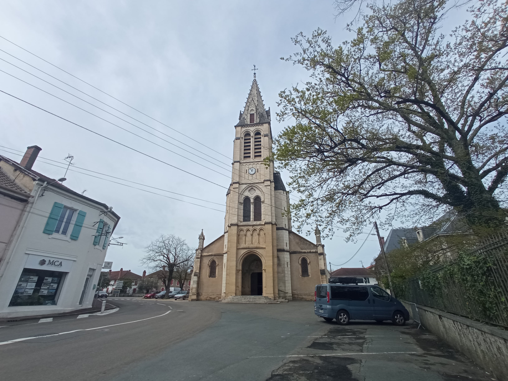

Bienvenue à SOUSTONS
Une ville sous le thon
DESCRIPTION :
Commune située dans la forêt des Landes en Marensin, sur les bords du lac du même nom. La partie de Port d'Albret relevant de sa commune (appelée Soustons-Plage) est située au sud du lac marin et au nord de Seignosse. Elle dispose de deux plages surveillées : l'une sur l'océan, l'autre sur le lac marin.

